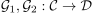
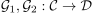

right whiskering
1. Definition / Proposition
Let  be categories,  and be functors.
be categories,  and be functors.
Then for a natural transformation  , right whiskering of
, right whiskering of  with
with  is also canonically a natural transformation
is also canonically a natural transformation
2. Proof
By assumption, there exists a commutative diagram
Since functors by definition preserve commutative diagrams, it follows, that
Hence we get a natural transformation